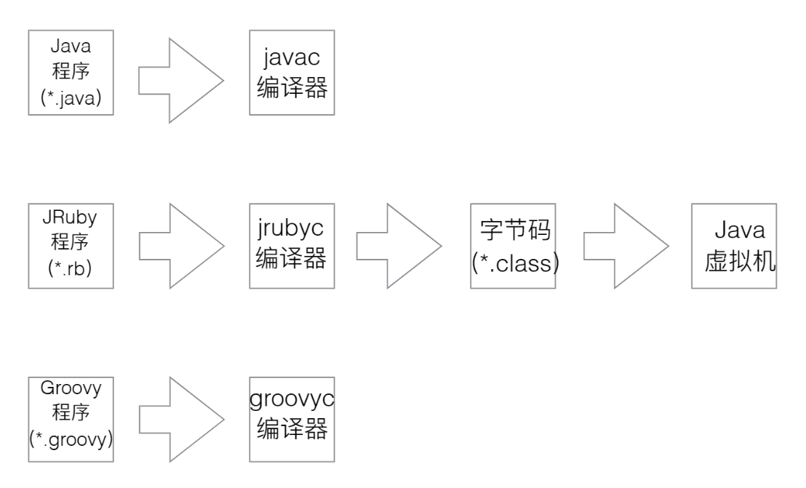
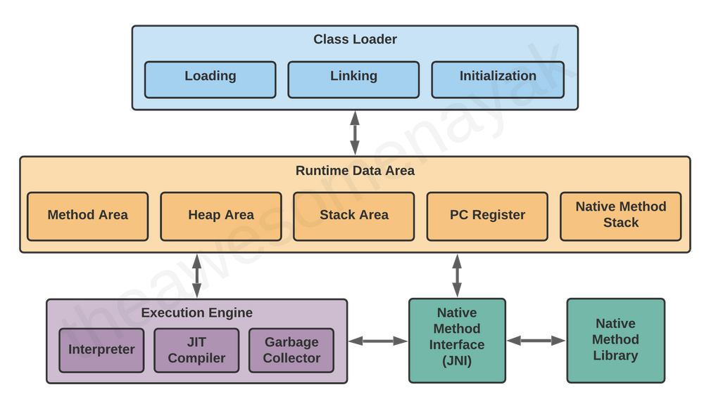
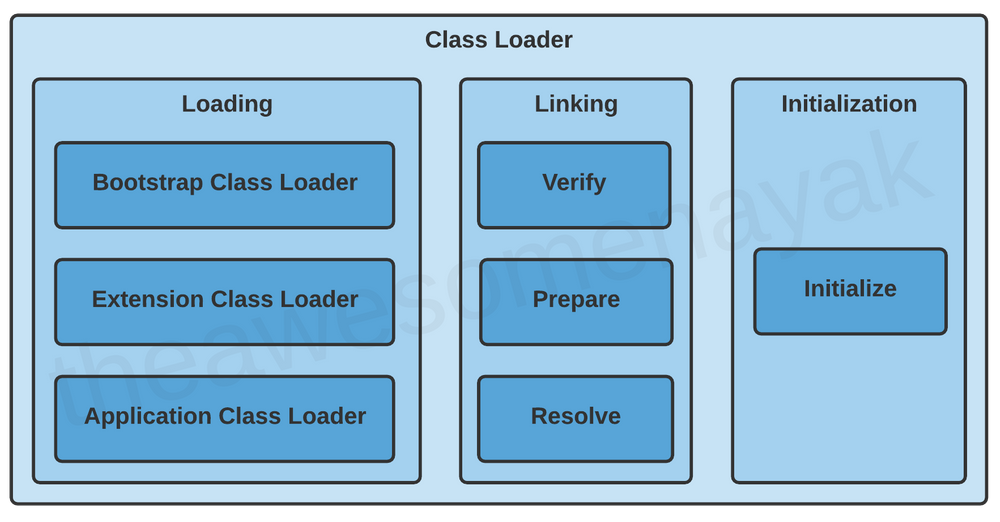

Everything about Java
Everything about Java输入输出流方式1.Scanner 类2.io流中的BufferedReader数据类型与类3.String流4.StringBuilder与StringBuffer类数组等基本数据类型的内置方法数组（主要是整形）String类型与StringBuilder类型深入理解JVM.class File structureThe ClassFile Structurejvm运行时数据区Three distinct components:1.类加载机制字节码专题• 算术指令OOP Part对象的定义类方法与封装职责Static Method 和 Final Method
输入输出流方式
1.Scanner 类
在 Java 中，Scanner 是一个类，用于读取用户的输入或者文件中的数据。Scanner 可以读取各种数据类型的输入，比如整数、浮点数、字符串等等。
以下是 Scanner 类的常用方法：
next(): 读取输入的下一个字符串，以空格为分隔符。nextInt(): 读取输入的下一个整数。nextDouble(): 读取输入的下一个双精度浮点数。nextLine(): 读取输入的下一行文本。hasNext(): 判断输入中是否还有下一个输入项。close(): 关闭Scanner对象。
下面是一个简单的例子，演示了如何使用 Scanner 从控制台读取用户输入的整数和字符串：
ximport java.util.Scanner;public class ScannerExample { public static void main(String[] args) { Scanner scanner = new Scanner(System.in); System.out.print("请输入一个整数: "); int num = scanner.nextInt(); System.out.println("您输入的整数是: " + num); System.out.print("请输入一个字符串: "); String str = scanner.next(); System.out.println("您输入的字符串是: " + str); scanner.close(); }}这段代码中，我们首先创建了一个 Scanner 对象 scanner，用于读取用户的输入。然后，我们通过 nextInt() 方法读取了用户输入的整数，通过 next() 方法读取了用户输入的字符串，最后使用 close() 方法关闭了 Scanner 对象。
运行这段代码时，程序会提示用户输入一个整数和一个字符串，然后将用户输入的数据输出到控制台上。
如果用户输入的不是整数，程序将会抛出一个 InputMismatchException 异常。如果您想要避免这种异常，可以使用 hasNextInt() 方法先判断一下输入是否为整数，例如：
xxxxxxxxxxif (scanner.hasNextInt()) { int num = scanner.nextInt(); // ...} else { System.out.println("输入的不是整数");}这样就可以避免因为用户输入错误而导致程序崩溃的问题。
2.io流中的BufferedReader
首先采用 BufferedReader reader = new BufferedReader(new InputStreamReader(System.in));初始化
类似于type[] dimensions = reader.readLine().split(" ");可以分割地读取信息
使用BufferedReader 读取文件实录
xxxxxxxxxximport java.io.*;public class ReadFile { public static void main(String[] args) { File file = new File("filename.txt"); try { BufferedReader br = new BufferedReader(new FileReader(file)); String line; while ((line = br.readLine()) != null) { System.out.println(line); } br.close(); } catch (IOException e) { e.printStackTrace(); } }}Java 中的 BufferedReader 类是一个用于读取字符流的缓冲区，它继承自 Reader 类。下面是 BufferedReader 类中常用的方法：
read()：读取单个字符并返回它的 Unicode 值，如果到达流的末尾，则返回 -1。
read(char[] cbuf, int off, int len)：读取字符到指定的字符数组 cbuf 中，从 off 索引位置开始，最多读取 len 个字符。
readLine()：读取一行文本并返回字符串，如果到达流的末尾，则返回 null。
skip(long n)：跳过 n 个字符。
mark(int readAheadLimit)：在当前位置设置标记，readAheadLimit 参数指定可以在不失去标记的情况下读取的字符数。
reset()：将流的位置重置为最近的标记。
close()：关闭流并释放与之关联的所有系统资源。
数据类型与类
3.String流
创建字符串最简单的方式如下: String str = "Runoob";
在代码中遇到字符串常量时，这里的值是 "Runoob"，编译器会使用该值创建一个 String 对象。和其它对象一样，可以使用关键字和构造方法来创建 String 对象。
用构造函数创建字符串：String str2=new String("Runoob");
下面是一些常用的 String 方法及其作用：
- length()：返回字符串的长度。
xxxxxxxxxxString str = "Hello World";int length = str.length(); // length = 11
2.charAt(int index)：返回字符串中指定位置的字符。
xxxxxxxxxxString str = "Hello World";char ch = str.charAt(1); // ch = 'e'
3.substring(int beginIndex) 和 substring(int beginIndex, int endIndex)：分别返回从指定位置开始到字符串末尾的子串和指定范围内的子串。
xxxxxxxxxxString str = "Hello World";String sub1 = str.substring(6); // sub1 = "World"String sub2 = str.substring(0, 5); // sub2 = "Hello"
3.indexOf(int ch) 和 indexOf(String str)：分别返回指定字符或字符串第一次出现的位置，如果没有找到，则返回 -1。
xxxxxxxxxxString str = "Hello World";int index1 = str.indexOf('l'); // index1 = 2int index2 = str.indexOf("World"); // index2 = 6
4.contains(String str)：返回字符串是否包含指定的子串。
xxxxxxxxxxString str = "Hello World";boolean contains = str.contains("World"); // contains = true
5.equals(Object obj) 和 equalsIgnoreCase(String anotherString)：分别比较字符串是否相等和忽略大小写后是否相等。
xxxxxxxxxxString str1 = "Hello World";String str2 = "Hello world";boolean equals1 = str1.equals(str2); // equals1 = falseboolean equals2 = str1.equalsIgnoreCase(str2); // equals2 = true
6.toLowerCase() 和 toUpperCase()：分别返回字符串的小写形式和大写形式。
xxxxxxxxxxString str = "Hello World";String lower = str.toLowerCase(); // lower = "hello world"String upper = str.toUpperCase(); // upper = "HELLO WORLD"
7.trim()：返回去掉字符串首尾空格的字符串。
xxxxxxxxxxString str = " Hello World ";String trimed = str.trim(); // trimed = "Hello World"
8.replace(char oldChar, char newChar) 和 replace(CharSequence target, CharSequence replacement)：分别返回用新字符或字符串替换所有旧字符或字符串后的新字符串。
xxxxxxxxxxString str = "Hello World";String replaced1 = str.replace('l', 'L'); // replaced1 = "HeLLo WorLd"String replaced2 = str.replace("World", "Java"); // replaced2 = "Hello Java"
9.startsWith(String prefix) 和 endsWith(String suffix)：分别返回字符串是否以指定的前缀或后缀开头/结尾。
xxxxxxxxxxString str = "Hello World";boolean startsWith = str.startsWith("Hello"); // startsWith = trueboolean endsWith = str.endsWith("World"); // endsWith = true
10.compareTo(String anotherString) 和 compareToIgnoreCase(String str)：分别按字典顺序比较字符串，返回两个字符串的差值。
xxxxxxxxxxString str1 = "Hello";String str2 = "World";int result = str1.compareTo(str2); // result < 0，因为 'H' 的 Unicode 值小于 'W'
11.matches(String regex)：返回字符串是否匹配指定的正则表达式。
xxxxxxxxxxString str = "Hello World";boolean matches = str.matches("Hello.*"); // matches = true
12.format(String format, Object... args)：根据指定的格式化字符串和参数返回一个格式化后的新字符串。
xxxxxxxxxxString name = "Alice";int age = 25;String formatted = String.format("My name is %s and I'm %d years old.", name, age);// formatted = "My name is Alice and I'm 25 years old."
13.valueOf(Object obj)：将任意类型的数据转换为字符串。
xxxxxxxxxxint num = 42;String str = String.valueOf(num); // str = "42"
14.getChars(int srcBegin, int srcEnd, char[] dst, int dstBegin)：将指定范围内的字符复制到目标字符数组中。
xxxxxxxxxxString str = "Hello World";char[] arr = new char[5];str.getChars(0, 5, arr, 0); // arr = ['H', 'e', 'l', 'l', 'o']
15.isEmpty()：返回字符串是否为空，即长度为 0。
xxxxxxxxxxString str = "";boolean isEmpty = str.isEmpty(); // isEmpty = true
16.codePointAt(int index)：返回指定位置的 Unicode 码点。
xxxxxxxxxxString str = "Hello";int codePoint = str.codePointAt(1); // codePoint = 101，即 'e' 的 Unicode 码点
4.StringBuilder与StringBuffer类
StringBuilder 和 StringBuffer 都是可变的字符序列，它们的作用类似于 String，但是它们允许在字符串中进行修改，而不会创建新的字符串对象。StringBuilder 和 StringBuffer 的主要区别在于线程安全性和性能。
StringBuilder 是线程不安全的，它的性能比 StringBuffer 更高。StringBuilder 主要提供了以下方法：
- append()：将指定的字符串或字符序列添加到当前 StringBuilder 对象末尾，并返回当前对象的引用。
xxxxxxxxxxStringBuilder sb = new StringBuilder("Hello");sb.append(" World"); // sb = "Hello World"
2.insert()：将指定的字符串或字符序列插入到当前 StringBuilder 对象的指定位置，并返回当前对象的引用。
xxxxxxxxxxStringBuilder sb = new StringBuilder("Hello");sb.insert(2, "l"); // sb = "Hello"
3.delete() 和 deleteCharAt()：分别删除指定范围内的字符和指定位置的字符，并返回当前对象的引用。
xxxxxxxxxxStringBuilder sb = new StringBuilder("Hello World");sb.delete(5, 11); // sb = "Hello"sb.deleteCharAt(1); // sb = "Hllo"
4.replace()：将指定范围内的字符替换为指定的字符串或字符序列，并返回当前对象的引用。
xxxxxxxxxxStringBuilder sb = new StringBuilder("Hello World");sb.replace(6, 11, "Java"); // sb = "Hello Java"
5.reverse()：将当前 StringBuilder 对象中的字符序列反转，并返回当前对象的引用。
xxxxxxxxxxStringBuilder sb = new StringBuilder("Hello World");sb.reverse(); // sb = "dlroW olleH"
6.capacity()：返回当前 StringBuilder 对象的容量，即可用于存储字符的空间大小。
xxxxxxxxxxStringBuilder sb = new StringBuilder("Hello World");int capacity = sb.capacity(); // capacity > 11，因为 StringBuilder 会预留一定的空间
除了上述方法，StringBuilder 还继承了 Object 类的一些方法，例如 toString()、equals() 等。
和 StringBuilder 不同，StringBuffer 是线程安全的，因此在多线程环境中使用 StringBuffer 更为安全。它的方法和 StringBuilder 是类似的，但是 StringBuffer 的性能相对较低，因为它需要进行同步操作来保证线程安全。因此，如果在单线程环境中使用，建议使用 StringBuilder，而在多线程环境中使用，应该使用 StringBuffer。
Q:
String可以用reverse颠倒吗？
A:
不可以，String 类是不可变的，因此它没有提供用于修改字符串的方法，包括 reverse() 方法。如果需要颠倒一个字符串，可以使用 StringBuilder 或 StringBuffer 的 reverse() 方法来实现。例如：
xxxxxxxxxxString str = "Hello World";StringBuilder sb = new StringBuilder(str);sb.reverse();String reversed = sb.toString(); // reversed = "dlroW olleH"
在上面的代码中，先将字符串 "Hello World" 转换为 StringBuilder 对象 sb，然后调用 sb 的 reverse() 方法将其反转，最后将反转后的 StringBuilder 对象转换为字符串返回。
需要注意的是，由于 StringBuilder 和 StringBuffer 可以修改字符串，因此它们的 reverse() 方法会直接修改调用对象本身，而不是返回一个新的字符串。因此，在使用 reverse() 方法时应该注意是否需要保留原字符串。
当涉及到存储和操作多个相同类型的值时，Java 数组就是一个非常有用的数据结构。以下是一些和 Java 数组相关的内容和示例：
- 定义数组
在 Java 中，可以使用以下方式来定义数组：
xxxxxxxxxx// 声明一个整型数组int[] numbers;// 声明并分配一个整型数组int[] numbers = new int[5];// 直接初始化一个整型数组int[] numbers = {1, 2, 3, 4, 5};
在第一种情况下，只是声明了一个整型数组的变量，但是没有为它分配内存空间。在第二种情况下，声明并分配了一个长度为 5 的整型数组。在第三种情况下，直接初始化了一个长度为 5 的整型数组，并且赋予了初始值。
2.访问数组元素
可以使用下标访问数组中的元素，下标从 0 开始。例如，要访问数组中的第一个元素，可以使用 numbers[0]。
xxxxxxxxxxint[] numbers = {1, 2, 3, 4, 5};int first = numbers[0]; // first = 1int third = numbers[2]; // third = 3
3.修改数组元素
可以使用下标来修改数组中的元素值。
xxxxxxxxxxint[] numbers = {1, 2, 3, 4, 5};numbers[0] = 6; // numbers = {6, 2, 3, 4, 5}
4.遍历数组
可以使用 for 循环来遍历数组中的所有元素。
xxxxxxxxxxint[] numbers = {1, 2, 3, 4, 5};for (int i = 0; i < numbers.length; i++) {System.out.println(numbers[i]);}
在上面的代码中，使用了 numbers.length 来获取数组的长度，从而遍历数组中的所有元素并输出。
5.多维数组
Java 中也支持多维数组。例如，可以使用以下方式定义一个二维数组：
xxxxxxxxxxint[][] matrix = {{1, 2, 3},{4, 5, 6},{7, 8, 9}};
在上面的代码中，定义了一个 3x3 的二维数组，并初始化了它的元素。
6.数组拷贝
Java 中可以使用 Arrays 类提供的 copyOf() 和 copyOfRange() 方法来拷贝数组。例如，可以使用以下方式来拷贝一个数组：
xxxxxxxxxxint[] source = {1, 2, 3, 4, 5};int[] target = Arrays.copyOf(source, source.length);
在上面的代码中，使用 Arrays.copyOf() 方法将 source 数组拷贝到 target 数组中。
这些是和 Java 数组相关的一些内容和示例，希望能够帮助你更好地理解和使用 Java 数组。
补充方法：
public static int binarySearch(Object[] a, Object key)
用二分查找算法在给定数组中搜索给定值的对象(Byte,Int,double等)。数组在调用前必须排序好的。如果查找值包含在数组中，则返回搜索键的索引；否则返回 (-(插入点) - 1)。
public static void sort(Object[] a)
对指定对象数组根据其元素的自然顺序进行升序排列。同样的方法适用于所有的其他基本数据类型（Byte，short，Int等）
数组等基本数据类型的内置方法
数组（主要是整形）
在Java中,数组类型(比如int[])有以下常用的内置方法:
length:获取数组长度,比如int[] a = {1, 2, 3}; a.length == 3。
clone():拷贝数组,比如int[] b = a.clone();。
toString():转换为字符串,比如a.toString() == "[1, 2, 3]"。
equals():比较两个数组是否相等,需要元素也相等才会返回true。
hashCode():获取数组的哈希值,两个相等的数组hash值也相等。
sort():排序数组,比如int[] a = {3, 1, 2}; a.sort(); 之后 a == {1, 2, 3}。
binarySearch():二分查找,数组必须已排序,否则结果未定义。
copyOf():拷贝数组的一部分到新数组,比如int[] b = Arrays.copyOf(a, 2); 仅拷贝a中的前两个元素。
asList():将数组转换为List,比如List
list = Arrays.asList(a);。 stream() / parallelStream():以顺序或并行流的方式处理数组,Java 8中新增。
fill():用指定值填充数组,比如a.fill(9);会使a变为{9, 9, 9}。
setAll():用指定函数设置所有元素的值,比如a.setAll(i -> 2 * i); 会使a变为{0, 2, 4}。
除此之外,Java 8中还新增了一些方法来处理原始类型数组,比如:
- spliterator():返回数组的Spliterator
- forEach():遍历数组
- reduce():聚合数组元素
- count():统计数组元素出现次数
- max()/min():找出最大/最小值 所以,通过上述丰富的方法,我们可以非常便捷地操作和处理数组,不需要编写很多迭代和循环代码。这也是Java语言中方法的强大之处。
String类型与StringBuilder类型
String的常用方法有:
length():获取字符串长度。
charAt():获取指定索引的字符。
substring():截取字符串。
indexOf():查找字符或字符串首次出现的索引。
lastIndexOf():查找字符或字符串最后一次出现的索引。
startsWith():判断字符串是否以某个前缀开头。
endsWith():判断字符串是否以某个后缀结尾。
equals():判断两个字符串是否相等。
equalsIgnoreCase():判断两个字符串是否相等,忽略大小写。
replace():替换字符串中的字符或子字符串。
split():按照分隔符将字符串分割为子字符串数组。
toLowerCase():将字符串转为小写。
toUpperCase():将字符串转为大写。
hashCode():获取字符串的哈希值。
compareTo():比较两字符串的顺序,返回负数、0或正数。
StringBuilder的常用方法有:
append():追加字符串或数据到StringBuilder中。
insert():在指定索引插入字符串或数据。
delete():删除字符序列。
reverse():反转StringBuilder中的字符序列。
capacity():获取StringBuilder的容量。
ensureCapacity():确保StringBuilder具有最小容量。
length():获取字符序列长度。
charAt():获取指定索引的字符。
setCharAt():设置指定索引的字符。
toString():将StringBuilder转换为String。 相比于String,StringBuilder更加适合进行字符串的构建和修改。因为StringBuilder的对象可以被多次修改,而String的对象一旦创建就不可变。 所以,当我们需要频繁修改字符串内容时,StringBuilder会更加高效。等字符串构建完成后,可以使用toString()方法转换为String使用。
xxxxxxxxxxString s = "Hello World";s.length(); // 11s.charAt(6); // 'W's.substring(6, 11); // "World"s.indexOf("or"); // 7s.lastIndexOf("l"); // 10s.startsWith("He"); // trues.endsWith("ld"); // trues.equals("Hello World"); // trues.equalsIgnoreCase("hello world"); // trues.replace("World", "Java"); // "Hello Java"s.split(" "); // ["Hello", "World"]s.toLowerCase(); // "hello world"s.toUpperCase(); // "HELLO WORLD"StringBuilder示例:
xxxxxxxxxxStringBuilder sb = new StringBuilder("Hello");sb.append(" World"); // sb = "Hello World"sb.insert(6, "Java"); // sb = "Hello JavaWorld"sb.delete(6, 11); // sb = "Hello Java"sb.reverse(); // sb = "avaJ olleH"sb.capacity(); // 16sb.ensureCapacity(20); // 容量变为20sb.length(); // 10sb.charAt(0); // 'a'sb.setCharAt(0, 'H'); // sb = "HavaJ olleH"String s = sb.toString(); // s = "HavaJ olleH"
深入理解JVM

.class File structure
The ClassFile Structure
A class file consists of a single ClassFile structure:
xxxxxxxxxxClassFile {u4 magic;u2 minor_version;u2 major_version;u2 constant_pool_count;cp_info constant_pool[constant_pool_count-1];u2 access_flags;u2 this_class;u2 super_class;u2 interfaces_count;u2 interfaces[interfaces_count];u2 fields_count;field_info fields[fields_count];u2 methods_count;method_info methods[methods_count];u2 attributes_count;attribute_info attributes[attributes_count];}
• ⼀组以8位字节为基础单位的⼆进制流
• 魔数
• 0xCAFEBABE
• 版本号
• 常量池
• 字⾯量
• 符号引⽤
• 访问标志
• 类索引、⽗类索引与接⼝索引集合
• 字段表集合
• ⽅法表集合
• 属性表集合 （代码的实现作为⼀个属性值）

《Java虚拟机原理图解》 1.1、class文件基本组织结构_亦山的博客-CSDN博客
- 字段信息数据指的是类中定义的字段，包括静态字段和实例字段。这些字段可以是基本数据类型（如int、float等），也可以是引用类型（如对象、数组等），它们在类的生命周期内保存着不同的数据。
每个字段在class文件中都会有一条字段表（Field Info）的数据结构来描述它的属性，包括字段名、访问修饰符、字段类型、常量值等信息。这些信息可以被JVM用来验证类的正确性，并在运行时动态地访问或修改字段的值。
- 属性信息（Attribute Info）是指一个类、字段或方法的附加信息。
类属性信息包括常量池、父类、接口表、字段表、方法表等。
字段属性信息描述了字段的一些附加信息，如字段的访问标志、常量值等。
方法属性信息可以描述方法的一些附加信息，如方法的访问标志、局部变量表、操作数栈、异常表、代码等。

jvm运行时数据区

虚拟机栈是什么？

栈帧是什么？

在运行时，常量池存放编译器生成的各种字面量与符号引用
在Java程序编译为字节码文件时，会将程序中使用的字符串、数字、符号引用等常量都存储在一个被称为常量池（Constant Pool）的表中。常量池是JVM运行时数据区的一部分，用于存储字面量和符号引用，是Java虚拟机实现语言级别不可变性和动态绑定的关键数据结构之一。常量池的作用是为了提高字节码的执行效率，避免了反复解析和计算常量值的过程，同时也为Java的反射机制、动态代理、字符串常量池等提供了基础。
下面是一个简单的Java代码示例：
xxxxxxxxxxpublic class ConstantPoolDemo {public static void main(String[] args) {String s1 = "Hello";String s2 = "World";String s3 = s1 + s2;String s4 = "HelloWorld";System.out.println(s3 == s4); // true}}
在编译时，常量池会存储字符串"Hello"和"World"以及"HelloWorld"的字面量，存储在常量池中的字符串会被JVM优化为常量，以便在程序运行时快速访问。在上述代码中，s1和s2是两个字符串变量，s3是由s1和s2拼接而成的新字符串，s4是一个字符串常量。在执行println语句时，由于s3和s4的值都为"HelloWorld"，因此它们在常量池中的引用是相同的，所以s3 == s4的结果为true。
除了字符串常量外，常量池还可以存储其他类型的常量，如数字常量、类和接口的符号引用等。在JVM中，常量池是类加载过程中的一个重要组成部分，它的内容在类加载时被加载并存储在方法区（Metaspace）中。在程序运行时，当需要引用常量池中的某个常量时，JVM会直接从常量池中获取该常量的值，而不是重新计算或解析该常量。

虚拟机运行的总体路线:

In programming languages like C and C++, the code is first compiled into platform-specific machine code. These languages are called compiled languages.
On the other hand, in languages like JavaScript and Python, the computer executes the instructions directly without having to compile them. These languages are called interpreted languages.
Java uses a combination of both techniques. Java code is first compiled into byte code to generate a class file. This class file is then interpreted by the Java Virtual Machine for the underlying platform. The same class file can be executed on any version of JVM running on any platform and operating system.
Three distinct components:
- Class Loader
- Runtime Memory/Data Area
- Execution Engine

1.类加载机制
类的加载指的是将类的.class文件中的二进制数据读入到内存中，将其放在运行时数据区的方法区内，然后在堆区创建一个 java.lang.Class对象，用来封装类在方法区内的数据结构。类的加载的最终产品是位于堆区中的 Class对象， Class对象封装了类在方法区内的数据结构，并且向Java程序员提供了访问方法区内的数据结构的接口。

字节码专题
运算指令
• 算术指令
⽤于对两个操作数栈上的值进⾏某种特定运算，并 把结果重新存⼊到操作栈顶。
| • 1)加法指令:iadd,ladd,fadd,dadd | • 2)减法指令:isub,lsub,fsub,dsub |
|---|---|
| • 3)乘法指令:imul,lmul,fmul,dmul | • 4)除法指令:idiv,ldiv,fdiv,ddiv |
| • 5)求余指令:irem,lrem,frem,drem | • 6)取反指令:ineg,leng,fneg,dneg |
| • 7)位移指令:ishl,ishr,iushr,lshl,lshr,lushr | • 8)按位或指令:ior,lor |
| • 9)按位与指令:iand,land | • 10)按位异或指令:ixor,lxor |
| • 11)局部变量⾃增指令:iinc | • 12)⽐较指令:dcmpg,dcmpl,fcmpg,fcmpl,lcmp |
• Java虚拟机没有明确规定整型数据溢出的情况，但规定了处 理整型数据时，只有除法和求余指令出现除数为0时会导致 虚拟机抛出异常。
• Java虚拟机要求在浮点数运算的时候，所有结果否必须舍⼊ 到适当的精度，如果有两种可表示的形式与该值⼀样，会优 先选择最低有效位为零的。称之为最接近数舍⼊模式。
• 浮点数向整数转换的时候，Java虚拟机使⽤IEEE 754标准中 的向零舍⼊模式，这种模式舍⼊的结果会导致数字被截断， 所有⼩数部分的有效字节会被丢掉。
•
如同操作⼀个普通数据结构中的堆栈那样，Java 虚拟机提供了⼀些⽤ 于直接操作操作数栈的指令，包括： • 1）将操作数栈的栈顶⼀个或两个元素出栈：pop、pop2
• 2）复制栈顶⼀个或两个数值并将复制值或双份的复制值重新压 ⼊栈顶：dup、dup2、dup_x1、dup2_x1、dup_x2、dup2_x2。
• 3）将栈最顶端的两个数值互换：swap
OOP Part
由于结构化编程具有不易阅读、不易变更、难以添加需求的缺点，因此采用面向对象编程的方式合并数据和行为职责，类就是这种职责的抽象，对象则是职责的具体实现。
对象的定义
每个对象都保存着描述当前特征的信息，对象状态的改变必须通过调用方法实现，对象的状态不能完全描述一个对象，每个对象都有唯一的身份，每个对象的标识与状态基本不同。
类
这个术语用来表述相同事物的集合，以概要的方式描述了相同事物中的所有元素，但是允许每一个元素在非本质特征上发生变化。
一旦定义了一个类，就可以接着得到这个类的对象或者实例，实例变量的值由类的每个实例提供。
方法与封装
既要注意属性的覆盖，也要注意统一；其次，要注意封装的完备性，不能出现一个只能加水不能倒水的杯子
职责
数据职责
- 表征对象的本质特征
- 行为计算所需要的数据
行为职责
- 表征对象的本质行为
- 拥有数据所应该体现的行为
Static Method 和 Final Method
在Java中，static和final是两个不同的关键字，用于不同的目的。
static关键字用于创建静态成员，这意味着它们与类本身相关，而不是与类的实例相关。静态成员包括静态变量和静态方法。静态变量是被所有类的实例共享的变量，而静态方法是不依赖于类的实例而被调用的方法。
例如，下面的代码演示了如何声明和使用静态变量和静态方法：
xxxxxxxxxxpublic class MyClass {static int myStaticVar = 42;static void myStaticMethod() {System.out.println("This is a static method.");}}// usageint value = MyClass.myStaticVar;MyClass.myStaticMethod();
final关键字用于创建常量，这意味着它们不能被更改。final变量必须在声明时初始化，并且不能被再次赋值。final方法表示它们不能被子类重写。
例如，下面的代码演示了如何声明和使用final变量和final方法：
xxxxxxxxxxpublic class MyClass {final int myFinalVar = 42;final void myFinalMethod() {System.out.println("This is a final method.");}}// usageMyClass obj = new MyClass();int value = obj.myFinalVar;obj.myFinalMethod();
总的来说，static和final都用于创建不同类型的成员，static用于创建静态成员，final用于创建常量和不可重写的方法。